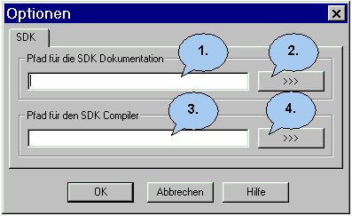

Tipps und Tricks |
Ein Problem tritt auf, wenn schon beide Versionen des SDK auf
einem System installiert waren, dann kann es vorkommen das Jumli
nicht das aktuelle Compiler- verzeichnis findet. Hier ist es am
besten man trägt den Pfad per Hand in den SDK-Optionendialog.
Der sieht so aus.

Jetzt
ist natürlich die Frage wo steht die Dokumentation und wo steht
der Compiler??? Am besten man lässt Windows suchen.
Für
die Dokumentation braucht man das Verzeichnis wo eine Datei Namens
"Starthere.htm" drin steht. Diese kann im Verzeichnis
"C:\Programme\Microsoft.NET\FrameworkSDK\" stehen. muss
aber nicht.
Jetzt noch das Verzeichnis das Compilers, der
heißt "CSC.exe" und steht manchmal in folgendem
Verzeichnis. "C:\WINDOWS\Microsoft.NET\Framework\v1.1.4322"